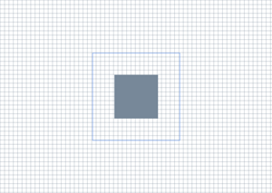

title: Create a simple Direct2D application description: Walks you through the process of creating a window that renders Direct2D content. ms.assetid: a627523e-417a-40cd-82c0-4f0380a3a0b1 keywords:
This topic walks you through the process of creating the DemoApp class, which creates a window, and uses Direct2D to draw content. In this tutorial, you learn how to create Direct2D resources, and draw basic shapes. You also learn how to structure your application to enhance performance by minimizing resource creation.
To follow the tutorial, you can use Microsoft Visual Studio to create a Win32 project, and then replace the code in the main application header and .cpp file with the code described in this tutorial.
Also see the Simple Direct2D application sample app on GitHub.
[!NOTE] If you want to create a Universal Windows Platform (UWP) app that uses Direct2D, then see the Direct2D quickstart for Windows 8 topic.
For an overview of the interfaces that you can use to create Direct2D content, see the Direct2D API overview.
Upon completion of the tutorial, the DemoApp class produces the output shown in the following illustration.

In this step, you set up your application to use Direct2D by adding the necessary headers and macros. You also declare the methods and data members that you'll use in later parts of this tutorial.
In your application header file, include the following frequently-used headers.
// Windows Header Files:
#include <windows.h>
// C RunTime Header Files:
#include <stdlib.h>
#include <malloc.h>
#include <memory.h>
#include <wchar.h>
#include <math.h>
#include <d2d1.h>
#include <d2d1helper.h>
#include <dwrite.h>
#include <wincodec.h>
Declare additional functions for releasing interfaces, and macros for error-handling and retrieving the module's base address.
template<class Interface>
inline void SafeRelease(
Interface **ppInterfaceToRelease)
{
if (*ppInterfaceToRelease != NULL)
{
(*ppInterfaceToRelease)->Release();
(*ppInterfaceToRelease) = NULL;
}
}
#ifndef Assert
#if defined( DEBUG ) || defined( _DEBUG )
#define Assert(b) do {if (!(b)) {OutputDebugStringA("Assert: " #b "\n");}} while(0)
#else
#define Assert(b)
#endif //DEBUG || _DEBUG
#endif
#ifndef HINST_THISCOMPONENT
EXTERN_C IMAGE_DOS_HEADER __ImageBase;
#define HINST_THISCOMPONENT ((HINSTANCE)&__ImageBase)
#endif
Declare methods for initializing the class, creating and discarding resources, handling the message loop, rendering content, and the windows procedure.
class DemoApp
{
public:
DemoApp();
~DemoApp();
// Register the window class and call methods for instantiating drawing resources
HRESULT Initialize();
// Process and dispatch messages
void RunMessageLoop();
private:
// Initialize device-independent resources.
HRESULT CreateDeviceIndependentResources();
// Initialize device-dependent resources.
HRESULT CreateDeviceResources();
// Release device-dependent resource.
void DiscardDeviceResources();
// Draw content.
HRESULT OnRender();
// Resize the render target.
void OnResize(
UINT width,
UINT height
);
// The windows procedure.
static LRESULT CALLBACK WndProc(
HWND hWnd,
UINT message,
WPARAM wParam,
LPARAM lParam
);
};
As class members, declare pointers for an ID2D1Factory object, an ID2D1HwndRenderTarget object, and two ID2D1SolidColorBrush objects.
private:
HWND m_hwnd;
ID2D1Factory* m_pDirect2dFactory;
ID2D1HwndRenderTarget* m_pRenderTarget;
ID2D1SolidColorBrush* m_pLightSlateGrayBrush;
ID2D1SolidColorBrush* m_pCornflowerBlueBrush;
In this part, you implement the DemoApp constructor and destructor, its initialization and message looping methods, and the WinMain function. Most of these methods look the same as those found in any other Win32 application. The only exception is the Initialize method, which calls the CreateDeviceIndependentResources method (which you'll define in the next part), which creates several Direct2D resources.
In the class implementation file, implement the class constructor and destructor. The constructor should initialize its members to NULL. The destructor should release any interfaces that are stored as class members.
DemoApp::DemoApp() :
m_hwnd(NULL),
m_pDirect2dFactory(NULL),
m_pRenderTarget(NULL),
m_pLightSlateGrayBrush(NULL),
m_pCornflowerBlueBrush(NULL)
{}
DemoApp::~DemoApp()
{
SafeRelease(&m_pDirect2dFactory);
SafeRelease(&m_pRenderTarget);
SafeRelease(&m_pLightSlateGrayBrush);
SafeRelease(&m_pCornflowerBlueBrush);
}
Implement the DemoApp::RunMessageLoop method, which translates and dispatches messages.
void DemoApp::RunMessageLoop()
{
MSG msg;
while (GetMessage(&msg, NULL, 0, 0))
{
TranslateMessage(&msg);
DispatchMessage(&msg);
}
}
Implement the Initialize method, which creates the window, shows it, and calls the DemoApp::CreateDeviceIndependentResources method. You'll implement the CreateDeviceIndependentResources method in the next section.
HRESULT DemoApp::Initialize()
{
HRESULT hr;
// Initialize device-independent resources, such
// as the Direct2D factory.
hr = CreateDeviceIndependentResources();
if (SUCCEEDED(hr))
{
// Register the window class.
WNDCLASSEX wcex = { sizeof(WNDCLASSEX) };
wcex.style = CS_HREDRAW | CS_VREDRAW;
wcex.lpfnWndProc = DemoApp::WndProc;
wcex.cbClsExtra = 0;
wcex.cbWndExtra = sizeof(LONG_PTR);
wcex.hInstance = HINST_THISCOMPONENT;
wcex.hbrBackground = NULL;
wcex.lpszMenuName = NULL;
wcex.hCursor = LoadCursor(NULL, IDI_APPLICATION);
wcex.lpszClassName = L"D2DDemoApp";
RegisterClassEx(&wcex);
// In terms of using the correct DPI, to create a window at a specific size
// like this, the procedure is to first create the window hidden. Then we get
// the actual DPI from the HWND (which will be assigned by whichever monitor
// the window is created on). Then we use SetWindowPos to resize it to the
// correct DPI-scaled size, then we use ShowWindow to show it.
m_hwnd = CreateWindow(
L"D2DDemoApp",
L"Direct2D demo application",
WS_OVERLAPPEDWINDOW,
CW_USEDEFAULT,
CW_USEDEFAULT,
0,
0,
NULL,
NULL,
HINST_THISCOMPONENT,
this);
if (m_hwnd)
{
// Because the SetWindowPos function takes its size in pixels, we
// obtain the window's DPI, and use it to scale the window size.
float dpi = GetDpiForWindow(m_hwnd);
SetWindowPos(
m_hwnd,
NULL,
NULL,
NULL,
static_cast<int>(ceil(640.f * dpi / 96.f)),
static_cast<int>(ceil(480.f * dpi / 96.f)),
SWP_NOMOVE);
ShowWindow(m_hwnd, SW_SHOWNORMAL);
UpdateWindow(m_hwnd);
}
}
return hr;
}
Implement the WinMain method, which serves as the application entry point. Initialize an instance of the DemoApp, class and begin its message loop.
int WINAPI WinMain(
HINSTANCE /* hInstance */,
HINSTANCE /* hPrevInstance */,
LPSTR /* lpCmdLine */,
int /* nCmdShow */
)
{
// Use HeapSetInformation to specify that the process should
// terminate if the heap manager detects an error in any heap used
// by the process.
// The return value is ignored, because we want to continue running in the
// unlikely event that HeapSetInformation fails.
HeapSetInformation(NULL, HeapEnableTerminationOnCorruption, NULL, 0);
if (SUCCEEDED(CoInitialize(NULL)))
{
{
DemoApp app;
if (SUCCEEDED(app.Initialize()))
{
app.RunMessageLoop();
}
}
CoUninitialize();
}
return 0;
}
In this part, you create the Direct2D resources that you use to draw. Direct2D provides two types of resources—device-independent resources that can last for the duration of the application, and device-dependent resources. Device-dependent resources are associated with a particular rendering device, and will cease to function if that device is removed.
Implement the DemoApp::CreateDeviceIndependentResources method. In the method, create an ID2D1Factory, which is a device-independent resource for creating other Direct2D resources. Use the m_pDirect2DdFactory class member to store the factory.
HRESULT DemoApp::CreateDeviceIndependentResources()
{
HRESULT hr = S_OK;
// Create a Direct2D factory.
hr = D2D1CreateFactory(D2D1_FACTORY_TYPE_SINGLE_THREADED, &m_pDirect2dFactory);
return hr;
}
Implement the DemoApp::CreateDeviceResources method. This method creates the window's device-dependent resources, a render target, and two brushes. Retrieve the size of the client area and create an ID2D1HwndRenderTarget of the same size that renders to the window's HWND. Store the render target in the m_pRenderTarget class member.
RECT rc;
GetClientRect(m_hwnd, &rc);
D2D1_SIZE_U size = D2D1::SizeU(
rc.right - rc.left,
rc.bottom - rc.top);
// Create a Direct2D render target.
hr = m_pDirect2dFactory->CreateHwndRenderTarget(
D2D1::RenderTargetProperties(),
D2D1::HwndRenderTargetProperties(m_hwnd, size),
&m_pRenderTarget);
Use the render target to create a gray ID2D1SolidColorBrush and a cornflower blue ID2D1SolidColorBrush.
if (SUCCEEDED(hr))
{
// Create a gray brush.
hr = m_pRenderTarget->CreateSolidColorBrush(
D2D1::ColorF(D2D1::ColorF::LightSlateGray),
&m_pLightSlateGrayBrush
);
}
if (SUCCEEDED(hr))
{
// Create a blue brush.
hr = m_pRenderTarget->CreateSolidColorBrush(
D2D1::ColorF(D2D1::ColorF::CornflowerBlue),
&m_pCornflowerBlueBrush
);
}
Because this method will be called repeatedly, add an if statement to check whether the render target (m_pRenderTarget) already exists. The following code shows the complete CreateDeviceResources method.
HRESULT DemoApp::CreateDeviceResources()
{
HRESULT hr = S_OK;
if (!m_pRenderTarget)
{
RECT rc;
GetClientRect(m_hwnd, &rc);
D2D1_SIZE_U size = D2D1::SizeU(
rc.right - rc.left,
rc.bottom - rc.top
);
// Create a Direct2D render target.
hr = m_pDirect2dFactory->CreateHwndRenderTarget(
D2D1::RenderTargetProperties(),
D2D1::HwndRenderTargetProperties(m_hwnd, size),
&m_pRenderTarget
);
if (SUCCEEDED(hr))
{
// Create a gray brush.
hr = m_pRenderTarget->CreateSolidColorBrush(
D2D1::ColorF(D2D1::ColorF::LightSlateGray),
&m_pLightSlateGrayBrush
);
}
if (SUCCEEDED(hr))
{
// Create a blue brush.
hr = m_pRenderTarget->CreateSolidColorBrush(
D2D1::ColorF(D2D1::ColorF::CornflowerBlue),
&m_pCornflowerBlueBrush
);
}
}
return hr;
}
Implement the DemoApp::DiscardDeviceResources method. In this method, release the render target and the two brushes you created in the DemoApp::CreateDeviceResources method.
void DemoApp::DiscardDeviceResources()
{
SafeRelease(&m_pRenderTarget);
SafeRelease(&m_pLightSlateGrayBrush);
SafeRelease(&m_pCornflowerBlueBrush);
}
In this part, you implement the windows procedure, the OnRender method (which paints content), and the OnResize method (which adjusts the size of the render target when the window is resized).
Implement the DemoApp::WndProc method to handle window messages. For the WM_SIZE message, call the DemoApp::OnResize method, and pass it the new width and height. For the WM_PAINT and WM_DISPLAYCHANGE messages, call the DemoApp::OnRender method to paint the window. You'll implement the OnRender and OnResize methods in the steps that follow.
LRESULT CALLBACK DemoApp::WndProc(HWND hwnd, UINT message, WPARAM wParam, LPARAM lParam)
{
LRESULT result = 0;
if (message == WM_CREATE)
{
LPCREATESTRUCT pcs = (LPCREATESTRUCT)lParam;
DemoApp *pDemoApp = (DemoApp *)pcs->lpCreateParams;
::SetWindowLongPtrW(
hwnd,
GWLP_USERDATA,
reinterpret_cast<LONG_PTR>(pDemoApp)
);
result = 1;
}
else
{
DemoApp *pDemoApp = reinterpret_cast<DemoApp *>(static_cast<LONG_PTR>(
::GetWindowLongPtrW(
hwnd,
GWLP_USERDATA
)));
bool wasHandled = false;
if (pDemoApp)
{
switch (message)
{
case WM_SIZE:
{
UINT width = LOWORD(lParam);
UINT height = HIWORD(lParam);
pDemoApp->OnResize(width, height);
}
result = 0;
wasHandled = true;
break;
case WM_DISPLAYCHANGE:
{
InvalidateRect(hwnd, NULL, FALSE);
}
result = 0;
wasHandled = true;
break;
case WM_PAINT:
{
pDemoApp->OnRender();
ValidateRect(hwnd, NULL);
}
result = 0;
wasHandled = true;
break;
case WM_DESTROY:
{
PostQuitMessage(0);
}
result = 1;
wasHandled = true;
break;
}
}
if (!wasHandled)
{
result = DefWindowProc(hwnd, message, wParam, lParam);
}
}
return result;
}
Implement the DemoApp::OnRender method. First, define an HRESULT. Then call the CreateDeviceResource method. That method is called every time the window is painted. Recall that, in step 4 of Part 3, you added an if statement to prevent the method from doing any work if the render target already exists.
HRESULT DemoApp::OnRender()
{
HRESULT hr = S_OK;
hr = CreateDeviceResources();
Verify that the CreateDeviceResource method succeeded. If it didn't, then don't perform any drawing.
if (SUCCEEDED(hr))
{
Inside the if statement that you just added, initiate drawing by calling the render target's BeginDraw method. Set the render target's transform to the identity matrix, and clear the window.
m_pRenderTarget->BeginDraw();
m_pRenderTarget->SetTransform(D2D1::Matrix3x2F::Identity());
m_pRenderTarget->Clear(D2D1::ColorF(D2D1::ColorF::White));
Retrieve the size of the drawing area.
D2D1_SIZE_F rtSize = m_pRenderTarget->GetSize();
Draw a grid background by using a for loop and the render target's DrawLine method to draw a series of lines.
// Draw a grid background.
int width = static_cast<int>(rtSize.width);
int height = static_cast<int>(rtSize.height);
for (int x = 0; x < width; x += 10)
{
m_pRenderTarget->DrawLine(
D2D1::Point2F(static_cast<FLOAT>(x), 0.0f),
D2D1::Point2F(static_cast<FLOAT>(x), rtSize.height),
m_pLightSlateGrayBrush,
0.5f
);
}
for (int y = 0; y < height; y += 10)
{
m_pRenderTarget->DrawLine(
D2D1::Point2F(0.0f, static_cast<FLOAT>(y)),
D2D1::Point2F(rtSize.width, static_cast<FLOAT>(y)),
m_pLightSlateGrayBrush,
0.5f
);
}
Create two rectangle primitives that are centered on the screen.
// Draw two rectangles.
D2D1_RECT_F rectangle1 = D2D1::RectF(
rtSize.width/2 - 50.0f,
rtSize.height/2 - 50.0f,
rtSize.width/2 + 50.0f,
rtSize.height/2 + 50.0f
);
D2D1_RECT_F rectangle2 = D2D1::RectF(
rtSize.width/2 - 100.0f,
rtSize.height/2 - 100.0f,
rtSize.width/2 + 100.0f,
rtSize.height/2 + 100.0f
);
Use the render target's FillRectangle method to paint the interior of the first rectangle with the gray brush.
// Draw a filled rectangle.
m_pRenderTarget->FillRectangle(&rectangle1, m_pLightSlateGrayBrush);
Use the render target's DrawRectangle method to paint the outline of the second rectangle with the cornflower blue brush.
// Draw the outline of a rectangle.
m_pRenderTarget->DrawRectangle(&rectangle2, m_pCornflowerBlueBrush);
Call the render target's EndDraw method. The EndDraw method returns an HRESULT to indicate whether the drawing operations were successful. Close the scope of the if statement that you began in Step 3.
hr = m_pRenderTarget->EndDraw();
}
Check the HRESULT returned by EndDraw. If it indicates that the render target needs to be recreated, then call the DemoApp::DiscardDeviceResources method to release it; it will be recreated the next time the window receives a WM_PAINT or WM_DISPLAYCHANGE message.
if (hr == D2DERR_RECREATE_TARGET)
{
hr = S_OK;
DiscardDeviceResources();
}
Return the HRESULT, and close the method's scope.
return hr;
}
Implement the DemoApp::OnResize method so that it resizes the render target to the new size of the window.
void DemoApp::OnResize(UINT width, UINT height)
{
if (m_pRenderTarget)
{
// Note: This method can fail, but it's okay to ignore the
// error here, because the error will be returned again
// the next time EndDraw is called.
m_pRenderTarget->Resize(D2D1::SizeU(width, height));
}
}
You've now completed the tutorial.
[!NOTE]
To use Direct2D, ensure that your application includes thed2d1.hheader file, and compiles against thed2d1.liblibrary. You can findd2d1.handd2d1.libin the Windows SDK.
In this tutorial, you learned how to create Direct2D resources, and draw basic shapes. You also learned how to structure your application to enhance performance by minimizing resource creation.